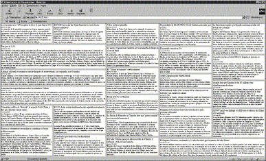

Low or no cost distributed evolutionary computation
JJ Merelo @jjmerelo
GeNeura + CITIC for PPSN2014. Watch this at TODO.
JavaScript
console.log('What is the what?')Brother, you got a computing cycle to spare?
Flickr image from Nationaal Archief @ flic.kr/p/9bGRAD.
The browser is the new operating system
Optimizing Web Page Layout using an annealed Genetic Algorithm as client-side script, PPSN, 1998
JavaScript is its native language
Every browser uses JavaScript
It's not distributed yet!
We're getting there!
Ajax, a standard browser-server communication framework
HTTP petitions from a standard object in the browser
Asynchronous!
Now we can distribute!
Browser-based distributed evolutionary computation: performance and scaling behavior, GECCO, 2007
Is that free?
Almost, but not quite
We still need the the server
And the sysadmin, and the electricity...

We need the cloud
What's cloud computing?
On-demand access to virtual devices.


That can't be free
It's mostly low-cost
Distributed EA for 10$
Is there a free lunch for cloud-based evolutionary algorithms?, IEEE CEC, 2013
IaaS have free tiers
But it generally is pay-as-you-go
Why did you (or did not) give me cycles

Potlatch is a resource redistribution system
== load balancing!
Creates a link between persons and tribes
== distributed system!
Where's my gift?
I want my free distributed computing system!
Potlatch arose from big resource surpluses
You only give what you've got to spare
I give access to knowledge
Open source!
Engage community from inception.
Citizen gives attention